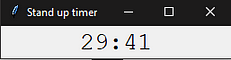
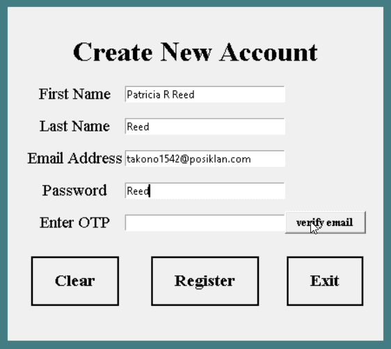
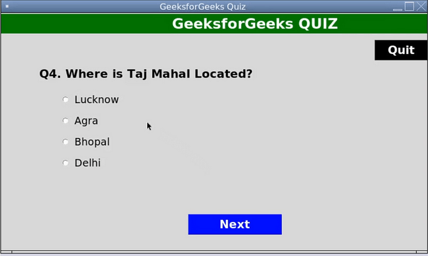
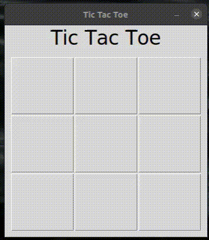
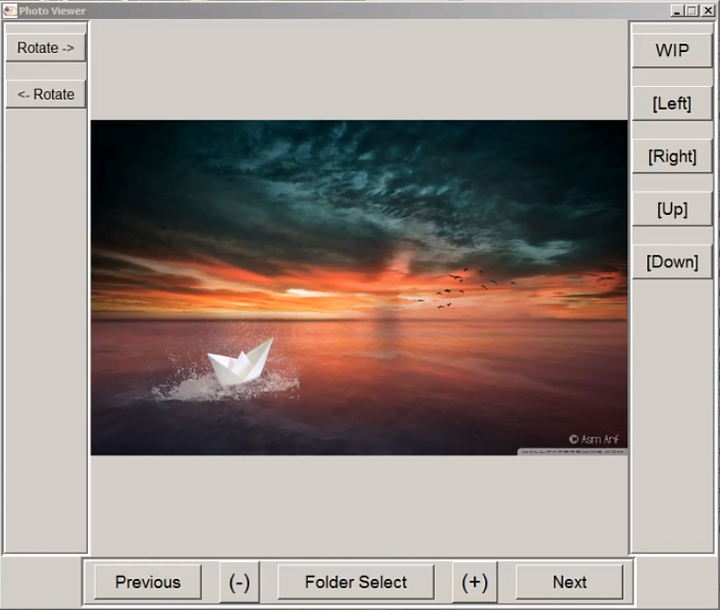
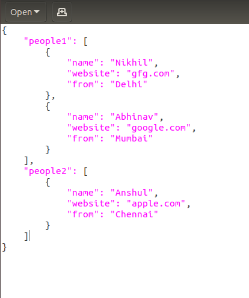

The first thing you might wonder is, why learn GUI frameworks or why make GUI projects? Specifically, why make a GUI program that no one will see or no one will use?
Why Do GUI Projects?
For most of us, we believe and desire our projects to need to be seen and displayed. We seek wealth, fame & power of some kind or another. You may find without these incentives your programming projects are, in essence, useless.
While it is true, the best programmers write code out of passion with the incentive of some external reward. It is, and I mean this, inefficient to chase an external incentive all the time. Often, you will find it more efficient to simply do programming. For this, I recommend project fodder. Basically, projects that won't be seen and no one will care about. If you want to improve your skills without the waves of emotion that come from seeking external rewards, GUI projects are one path way to go.
The basic idea I am pushing here, is, imagine you are at the gym. No one sees you weight lifting. No one sees the routines and daily 2 hour commitments. But, in 3 months what do you and your peers eventually see? The programming skills. This is the mindset I recommend here.
GUI projects are great project fodder for learning a language. Which is what this list is for. Its like working out, exercise, if you will. You do it for the sake of improving your skills so that perhaps one day you have the skills you needed for that specific incentive.
Yes, there are programmers who actually receive the incentives you are after and yes they have passion because of those incentives. But, if you want to become a great programmer despite those incentives being out of reach, you need to emulate this passion with routine project fodder.
Either way, you have to learn the exact same skills as a developer. Python is Python and will always be Python. Whether or not you have incentives both those with incentives and those without incentives will have to learn it either way. It ends the same.
Which Framework and Language Should I Use?
All of the examples here are using Tkinter in Python. But their application as implementation projects is universal to all languages. Think of this list as an exercise list for learning any new language or framework.
Think of it, maybe one day, due to your GUI skills you can make a cool Desktop app or GUI tools for automation. Perhaps you can insert a rendering window inside your GUI and manipulate your renderer (this is essentially what a web browser does).
In every language & every framework, start small and build up. And, a final cool tidbit. In all my journey of trying out GUI frameworks, Electron in Javascript was #1, then Java Swing as #2. These were the easiest and most powerful. Though, like I said, it is project fodder, so it should not matter which is most powerful or easy as we are focusing on learning as the result and not the result itself.
But, know if you are in Java or Javascript, those are epic frameworks. Now without further ado, here are the list of GUI projects.
Count Down Timer
One of my first GUI Projects. This is a classic for the absolute beginner. Let me give you some features in order of implementation which are for project fodder.
- Timer from 10 minutes
- Buttons to stop & go
- Gets current time
- Switch between time & timer
- Get input for timer length
- Create an alarm sound for timer
- Create an alarm sound for clock
- Every time you stop the timer, add it to a list of timer numbers
- Try to save the current value of the timer when you exit and come back. Use a JSON file
After all that save it on GitHub and move to the next GUI.
Quote Of The Day
Create a small JSON file and make a list of quotes. Read the JSON file and list a random quote of the day!
Account JSON Saver

Create a JSON file from the above. You will learn more about JSON, file saving & the different GUI data structures.
A Randomized Multiple Choice Quiz
This will teach you basic randomization and GUI layout. A feature to implement: JSON reader for expanding the quiz via file input.
One Shot Tic-Tac-Toe
Make 9 buttons then have them turn to X and O alternatively. When one wins, say "X or O wins!"
Short Pictured Choice Game
I recommend coping a small square area from Google maps, the first-person view, then implementing the above. Try to create 15-20 image movements on a street. Save this on Github.
Rest API Reader
For this one, instead of that top bar that says "open" just replace it with an input that accepts a URL and reads the web. Try this one: https://jsonplaceholder.typicode.com/todos/1
20 more projects here: https://github.com/JesseGuerrero/Python-GUI-Projects
Anywho, I hope you learned something. Happy coding!
Resources
- Quote of the day: https://www.studytonight.com/tkinter/python-tkinter-text-widget
- Account JSON Saver: https://pythonguides.com/python-tkinter-multiple-windows-tutorial/
- Tic-Tac-Toe: https://devdojo.com/jothin-kumar/tic-tac-toe-with-python-tkinter-part-1
- Image Navigator: https://python-forum.io/thread-12585.html
- API JSON Viewer: https://www.geeksforgeeks.org/convert-json-to-dictionary-in-python/
- 20+ GUI Projects: https://github.com/JesseGuerrero/Python-GUI-Projects